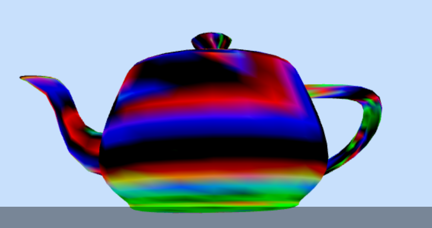
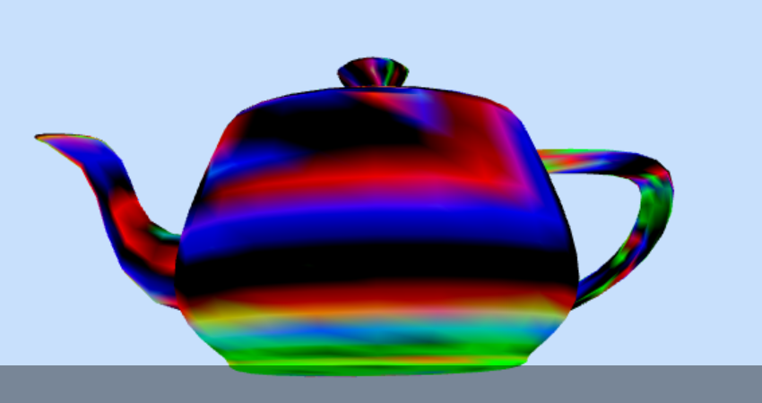

Technical Art Experience
Team Projects
All projects used version control.
Rec Room Inc
2D UI: Building features with a proprietary 2D UI design system built atop Unity UI Toolkit
Coding: Delivering player-facing, data-driven UI improvements for discovery, in an existing C# Unity codebase
Consumer of Tooling: Using proprietary UI built in Unity UI and C# Interfaces to localize game content
Project Komodo
3D UI: Programming VR interactions out of collisions, transforms, and button input
Scripting: Integrating Tilt Brush import API with third-party import code and original code
Tools: Debugging Multiplayer Relay State by Programming an Admin Website
Fashion as Virtual Art


Graphic Design: Combining a Hiro marker, QR code, and garment artist information into exhibit graphics
Scripting: Coding a website in A-Frame, Three.js, and with Icosa Gallery API for AR exhibit
Vamm Social XR Music App
3D UI: Created 3D model translation gizmos for touch devices using RealityKit and Swift
Scene Graphs: Designed and implemented a scene graph architecture in a custom .vamm file type
File I/O: Programmed import functionality in Flutter
The Island XR Music Experience
3D UI: Writing an environment change interaction triggered by a 3D collision, with Three.js
AGCO


Implementation: Converted PBV files to OBJ and MTL for a proof-of-concept app
Post-processing: Creating a psychedelic effect with depth of field
Shading: Isolating steel fabrication joints by writing a vertex shader
Virtision.com Apartment Tours
Implementation: Implementing assets into a custom WebVR stack by writing a Blender Python script
Optimization: Retopologizing a High-Poly Mountain Model
Solo Projects
Interactive Computer Graphics Course
 


Scripting: Programmed a Perlin Noise-Generated Terrain algorithm in Javascript(?) for WebGL Flight Simulator
Marching Illini Website
2D UI: A study on using photos, call-to-actions, and description text to point various audiences to the right subpages
Pebble CU MTD App
2D UI: An experiment with putting all the information you need for the bus into a tiny black-and-white e-ink smartwatch screen
Music Department Logo
Performance: Splitting a large CAD factory model into pieces for better frame rate
Project Antidifferentiation
Post-processing: wrote a script for HTML Canvas to process pixel data to find bounds of a character projection video
Tools: wrote a script for HTML Canvas to translate and scale video content, with an HTML/CSS/JS UI
3D Art Experience
Team Projects
The Island XR Music Experience
Animation: Animated the path of a bird in a prototype experience in Unity
Optimization: Retopologizing a High-Poly Mountain Model for mobile AR
Project Komodo


Lighting: Baking lighting and adding dynamic lights in Unity
Environment Art: Creating a custom teaching environment for fashion critiques in Blender with Poliigon materials
Props: Creating efficient spatial UI elements with simple geometry and shadeless materials
AGCO
Texturing: Creating brand-matching spatial UI elements that look great unlit
Virtision.com Apartment Tours
Environment Art: Creating a skybox from a 360 photo
Lighting: Baking lighting in Blender, modifying textures, and adding dynamic lights in A-Frame
Materials: Creating PBR materials for furniture and fixtures from photo references and Poliigon.com
Props: Creating apartment enclosure, fixtures, and furniture from scratch in Blender
Project Magic Forest
Environment Art: Sketching environment concepts in a storyboard
Architecture Minor


Environment Art: Understanding principles of architectural design, like hierarchy, axis, datum
Environment Art: Understanding spatial experiences through creating conceptual models, and light-frame construction through creating structural models
Environment Art: Architectural visualization with pencil, ink, Photoshop, Blender for perspective, axonometric drawings
Environment Art: Drafting with AutoCAD
Hobby Projects
Figure Skating and Marching Band
Animation: understanding flow, long lines, extensions, rotation, rhythm, snappiness
Modular Desk
Props: Understanding small furniture construction and finishing
Music Department Logo
Animation: Keyframing prop and camera transforms for social media and trailer concepts
Lighting: Creating studio lighting
Physics: Simulating a Cloth Cape for a Superhero Model
Hatsune Miku Character Model
Materials: Creating glossy pleather materials for clothing, and human materials for an anime-style character
Modeling: Getting topology right for a human anime character
Rigging: Weight Painting and Rigging for Basic Poses
Texturing: UV unwrapping and mapping decals, clothing textures, and hair textures
Photography


Environment Art: Understanding composition through color, lighting, framing, details, lines, foreground/middle/background
Environment Art: Understanding storytelling through subjects, details, collage
Digital Painting

Stylized Textures: Physical understanding of subsurface scattering, diffuse, specular light behaviors
Environment Art: Illustrating environment shots with lighting in digital pencil drawing